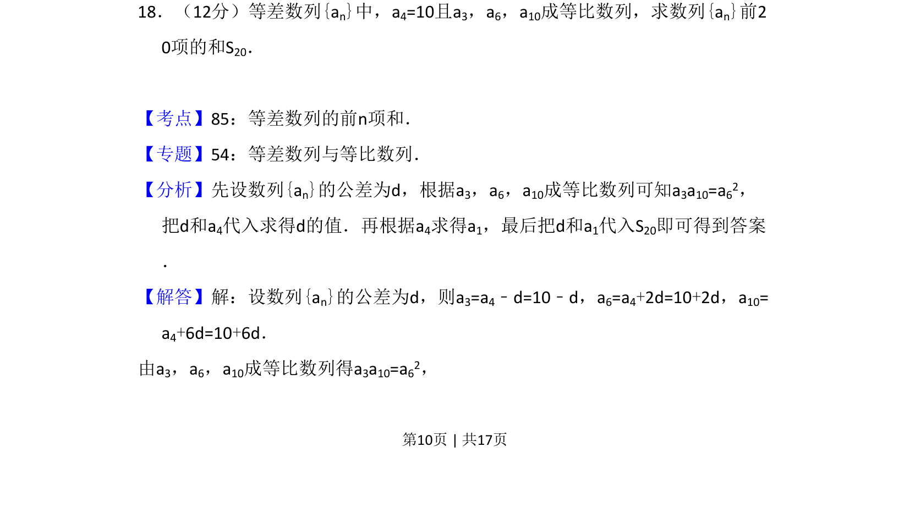
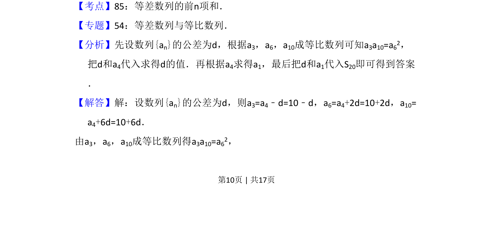
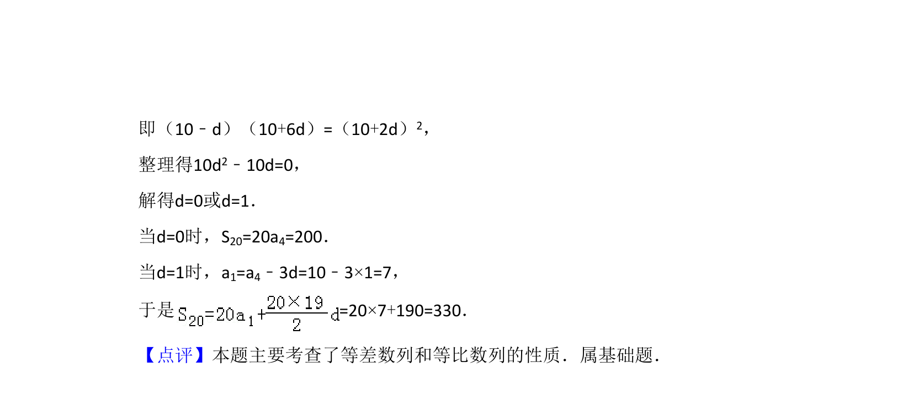

考点：数列 等差数列 等比数列

等差数列a₄=10且a₃、a₆、a₁₀成等比，求公差d后算出a₁，再求前20项和S₂₀。


📄 原 PDF 第 10 页：
素材/真题/吉林/2008-2024·（吉林）数学高考真题/2008年高考数学试卷（文）（全国卷Ⅱ）（解析卷）.pdf
18．（12分）等差数列{an}中，a4=10且a3，a6，a10成等比数列，求数列{an}前2 0项的和S20．
【考点】85：等差数列的前n项和．菁优网版权所有 【专题】54：等差数列与等比数列． 【分析】先设数列{an}的公差为d，根据a3，a6，a10成等比数列可知a3a10=a62， 把d和a4代入求得d的值．再根据a4求得a1，最后把d和a1代入S20即可得到答案 ． 【解答】解：设数列{an}的公差为d，则a3=a4﹣d=10﹣d，a6=a4+2d=10+2d，a10= a4+6d=10+6d． 由a3，a6，a10成等比数列得a3a10=a62，